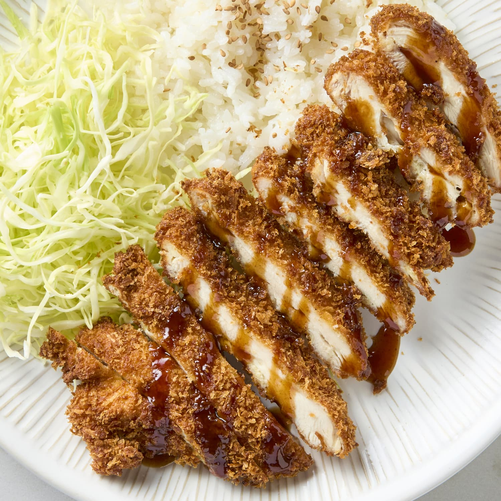

Home
Chicken Katsu

Description
Chicken Katsu is a dish originating from Japan. The Katsu part of it refers to the way the dish is prepared. Chicken Katsu is a dish consisting of chicken cutlets that are fried in panko breadcrumbs.
Katsu can also be made with pork, in which case it is called tonkatsu. These katsu can be used in many other dishes like curry, ramen, and more.
Ingredient List
- Skinless and boneless chicken breast halves
- Salt and pepper for seasoning
- All purpose flour
- 1 egg
- Panko breadcrumbs
- High smoke point neutral oil, such as canola or vegetable oil
Steps
- Season the chicken breast halves.
- Dredge the chicken in flour.
- Coat each chicken breast in egg.
- Press each chicken breast into panko breadcrumbs.
- Fry until golden brown.